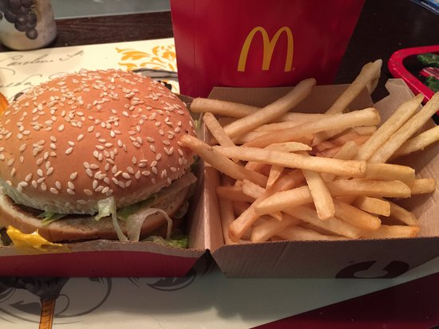

McDonald's
McDonald's je najpoznatiji lanac brze hrane na svijetu i simbol američke kulture, modernog kapitalizma i globalizacije. Osnovan je 1940. godine u San Bernardinu, Kalifornija, od strane braće Richarda i Mauricea McDonalda. Međutim, za njegov globalni uspjeh najzaslužniji je Ray Kroc, poslovni čovjek koji je 1955. otvorio prvi službeni McDonald's restoran s vizijom širenja franšize diljem SAD-a i svijeta. Danas McDonald's posluje u više od 100 zemalja s preko 40.000 restorana, što ga čini jednim od najraširenijih i najprepoznatljivijih brendova u povijesti.
McDonald's je počeo kao klasični "drive-in" restoran, ali su braća McDonald ubrzo razvila vlastiti sustav brze pripreme hrane koji su nazvali "Speedee Service System". Njihova ideja bila je pojednostaviti jelovnik i ubrzati pripremu hrane, što je u osnovi moderna ideja fast fooda. Godine 1954., Ray Kroc je prepoznao potencijal brenda i ponudio se kao franšizni agent. U roku od nekoliko desetljeća, McDonald’s je postao globalni simbol brze prehrane, s milijunima gostiju svakog dana.
McDonald's je poznat po svojim: Zlatnim lukovima (poznati "Golden Arches") Maskoti Ronald McDonald Jednostavnom, ali privlačnom logotipu i dizajnu interijera Crveno-žutoj paleti boja koja stimulira apetit Ova kombinacija dizajna, boja i simbola stvara osjećaj poznatosti i sigurnosti gdje god da se nalazite u svijetu.
Većina McDonald's restorana djeluje po franšiznom modelu, što znači da ih vode lokalni poduzetnici pod McDonald's brendom, uz stroga pravila standardizacije. Time se osigurava dosljedna kvaliteta i usluga – gdje god da uđete u McDonald’s, znate što očekivati. Franšizni model omogućio je i brzo širenje brenda – uz obuku, marketing i podršku iz sjedišta, vlasnici franšiza uspijevaju u konkurentnom tržištu.
McDonald's je snažno utkan u popularnu kulturu. Pojavljuje se u filmovima, serijama, glazbi i društvenim mrežama. Izrazi poput "McJob" koriste se za opisivanje poslova u industriji brze hrane, a lik Ronald McDonald bio je godinama zaštitno lice brenda, posebno među djecom. McDonald's restorani često su mjesto prvih poslova mladih ljudi i dio su svakodnevnog urbanog života u mnogim gradovima. U nekim dijelovima svijeta, McDonald’s je statusni simbol – primjer zapadnog načina života. U drugim je zemljama predmet kritika zbog globalizacije, ali unatoč kontroverzama, njegova prisutnost ne jenjava. McDonald's se uspješno transformirao iz simbola masovne proizvodnje u prepoznatljivog i lokalno prilagođenog brenda.
Danas McDonald's teži ponuditi ugodnije i modernije okruženje. Unutrašnjost restorana redizajnirana je kako bi izgledala kao ugodna urbana kavana, s udobnim sjedalima, Wi-Fi-jem, punjačima za mobitele i digitalnim ekranima. Mnogi restorani imaju i McCafé dio, koji nudi kvalitetnu kavu, kolače i peciva u ambijentu nalik klasičnoj kavani. To je McDonald'sov pokušaj približavanja starijoj i urbanijoj publici, koja osim hrane traži i prostor za odmor, rad ili druženje.
McDonald's ne pokazuje znakove usporavanja. Planira otvaranje novih lokacija, širenje ponude, uvođenje automatskih i beskontaktnih sustava, te sve veću integraciju umjetne inteligencije i robotike u svoje poslovanje. Kroz brze prilagodbe, stalne inovacije i strateške marketinške kampanje, McDonald's se pozicionira kao lider u industriji brze hrane – ne samo po broju lokacija, već i po brzini prilagodbe novim vremenima.
McDonald’s je danas mnogo više od mjesta gdje se jede hamburger. To je kulturološki fenomen, simbol urbanog života, tehnološki lider u industriji hrane i pokretač promjena u načinu na koji ljudi kupuju, naručuju i konzumiraju obroke. Njegova sposobnost da se istovremeno prilagodi lokalnim ukusima i zadrži globalni identitet čini ga jedinstvenim brendom u modernom svijetu. Bilo da ideš na brzi doručak, večeru s prijateljima ili jednostavno poželiš nešto poznato i ukusno – McDonald's ostaje mjesto koje milijuni ljudi svakodnevno biraju.
Najpoznatiji je po Big Macu i pomfritu.